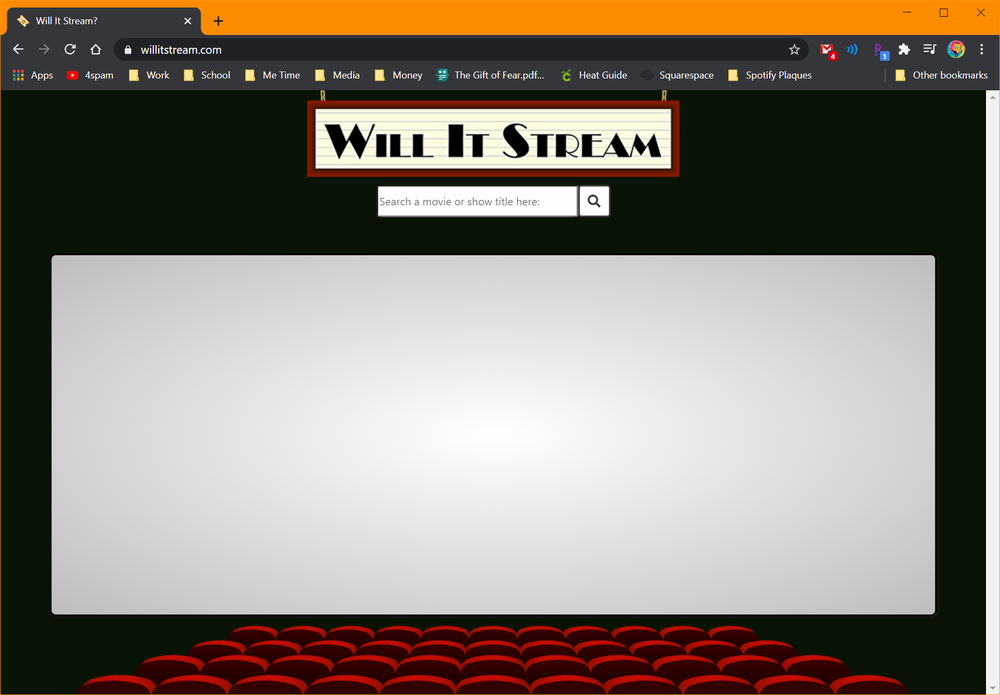
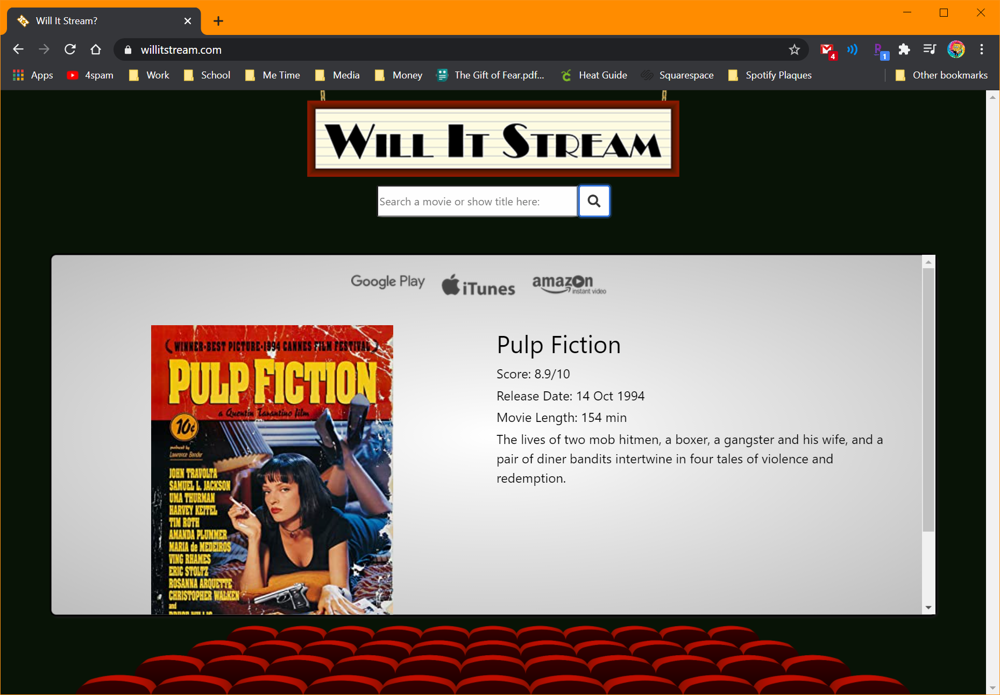

Will It Stream is a collaborative project I recently helped complete. Once a user has inputted a tv or movie title, two separate APIs (OMDb and uTelly) are called to display the relevant information. A poster, title, critics score, release date, runtime, and a brief description are all displayed as a result of the search. As well as any applicable streaming service icons leading directly to the title on the corresponding streaming platform. The User Interface is designed to mimic the cinema experience. With so many theaters shutting down, and our bedrooms and living rooms doubling as home theaters, Will It Stream was created for the home viewer in mind.

